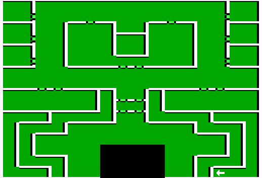

Coraks Cave
| X | Y | Event |
| 8 | 11 | Find Red Duke and Dead Eye held Captive in Ambush Valley at 14, 1. |
| 7 | 11 | Lloyd's Beacon |
| 13 | 3 | Lowers Barriers |
| 8 | 0 | Corak's Body |
| 13 | 0 | Holy Word - H. Gibson Look south on a tree in Lost Soul's Woods it will be. |
| 7 | 13 | Exit |
| 8 | 13 | Exit |